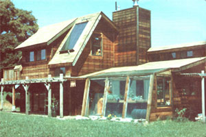

Otis Wollan and Jane Mulder prove that a couple of "just plain folks" can design and build their own.
Back in the fall of 1976-when my wife Jane and I decided to build a passively solar-heated home-we had neither the time nor the money to experiment with unproven ideas. Our hearts told us that we needed to be out of the city-and into a house of our own-quickly.
We were also dead set on becoming as energy-self-sufficient as possible ... though we didn't want to end up with a building that looked like a wooden version of Skylab. But most important; we wanted to prove to ourselves that-despite the skeptics' claims-it was possible for two average people to teach themselves to design and build their own solar-heated house!
Our home may appear to be-in many respects-a rather conservative blend of well-known passive solar techniques. Nonetheless, the proof of the puddingwe think-is that our cautious mix of modes has worked: We were able to move -only seven months after breaking ground-into a house which can be kept warm with one cord of wood per winter and is a pure joy to live in all year round. Best of all we built our dwelling-with ,the exception of digging the excavation -entirely with our own hands ... and for a price which won't keep us in debt the rest of our lives!
The climate of our Sierra Nevada foothills isn't known for extremely bitter winters. At the 1,700 foot level-where our house is located-we normally see a day or two of subzero temperatures and a couple of feet of snow each year. As a matter of fact, it's actually our winter "monsoons" -when cold rain often falls for as many as three weeks on endwhich pose the most significant solar heating problem.
However, the real solar-home-design challenge (in our climate, at least) is to provide for both heating and cooling. We've seen temperatures of over 110°F more often than we care to remember, and a 50*F difference between the nightly low and daily high isn't uncommon. As you can imagine, then, our abode's ability to cool us in the summer is darn near as important as is its power to warm us in the winter.
In order to be sure that our home could perform the dual functions of heating and cooling, we had to adapt solid solar principles to our own location and climate. Instead of facing the major window area due south, for instance, we angled the "sunny side" five degrees to the east. This stance helps the structure even out the wide range of daily temperatures by capturing badly needed early morning rays and rejecting some of the less desirable afternoon ones.
In addition, we use existing trees to the east and west of our Shangri-La to protect us from the summer sun's intensity, as detailed in the accompanying sun path diagram. During the warm months the sun rises and sets a little north of due east and west. The California live oak to the east and the grove of oaks to the west shield the house before 9:30 a.m. and after 4:30 p.m. (after all, trees are about the most efficient passive solar energy components available). And in the winter-when ol' Sol ascends further to the south-neither of the stands of timber casts its shadow on our walls.
Of course, our dwelling's orientation wasn't the result of a happy accident. I chose the site by using an unsophisticated but-as it turned outeffective method. On the morning of March 22 (the spring equinox) I placed a board on the edge of the shadow cast by the eastern tree, and thenat 4:30 p.m. on the same day-positioned another plank on the boundary of the penumbra formed by the western group of hardwoods. The line made by these two boards marked the location for the southern wall.
As you can see in the photos, the southern exposure of our solar bungalow has plenty of windows. In fact, the greenhouse-which was added several months after the rest of the house was finishedbrought the total glass area on the south wall up to 416 square feet. Our conservatory functions both as a solar collector and as an air lock to prevent heat loss from the main house. During the daytime the heat collected by the solarium can be vented-as needed-into the living room by opening the inner door and windows. Then, come evening, we close up the greenhouse and let it draw stored warmth from the battery of black 55-galIon drums full of water which line the room's walls.
The hothouse has been one of the most successful features of our build-it-yourself solar home. The temperature in the glazed structure will often, at dawn, be in the "safe for plants" 50*F range ... while the mercury outside has plunged to well below freezing. In fact, because we were without the greenhouse during our first winter in the house, we have a pretty good idea just what the addition did for our heat-collection capacity. The first year's cold spell caused us to stuff 21/2 cords of wood through our wood stove, and burn $28 worth of propane. But this past winterwith the greenhouse grabbing additional warmth from the sunwe consumed only one cord of wood, and lit the propane furnace just once ... to see if it still worked!
Not surprisingly, the temperature variation in the greenhouse -let alone the intensity of the room's light-is a little rough on house plants. But our vegetables thrive there all through the winter, and regularly provide us with a fresh green bonus at the dinner table after a chilly day's work outside.
During the summer, however, few plants other than hearty jungle growth could survive the intense heat of the solar hothouse. After discovering that not even an extensive ventilation system was able to keep the solarium cool enough, Jane and I devised a system for turning the greenhouse-when the dog days hit-into a covered porch. As you can see in the "Glazing Detail" diagram, the glass on the walls is removable and a shade can be attached to the roof ... so our former" hotbox" can become a pleasant place to relax on a sultry evening.
Winter's low-angled sunbeams pass through the southern glass and warm over two-thirds of our home's floor area by direct radiation. Brown floor tileswhich are set atop a four-inch layer of concrete, a 6-mil piece of plastic, and a gravel base-absorb that heat and hold it for release during the night. To help prevent heat loss through the perimeter of the slab, we insulated all the edges of the concrete thermal mass with two inches of polystyrenea nd metal flashing. In addition, our Franklin-style stove is housed in an adobe fireplace, and that earthen material lends its famed heat-retaining abilities to our "house warming" cause.
The use of the floor as a thermal mass has, been effective for our home in this climate, but we hesitate to recommend such an approach universally. You see, the heat gained through direct sunlight beating on the brown tile surface has had much less tendency to migrate to shaded areas than we had expected. Thus the floor space that doesn't It receive any rays tends to reach some compromise between the warmth of the air in the room and the cooler temperature of the ground below (the latter happens to be about 57*F, year round, where we live). People in areas with less sunshine, or lower ground temperatures, than ours might find a tile floor uncomfortably cool during extended bad weather.
On the other hand, in the heat of August the cool tiles feel mighty fine against a bare foot. And since the summer sun is barred from the floor area by overhangs, patios, and the angle of the clerestory windows at the peak of the roof, the floor seldom heats up significantly. Only during one miserable string of over-105°F days last summer did the thermal mass give in and get warm. Fortunately, even then we managed to stay relatively comfortable ... by opening the clerestory windows and creating a convectionary flow of air through the living room.
Our domestic water heater taught us a lesson or two ... but perhaps the most significant of those teachings (after the initial frustration) was that solar systems can have a number of small problems and still work fairly well. Most of our difficulties arose from the way we applied "open loop" water warming.
We were doggedly opposed to "closed loop" systems ... not only because of their complexity and expense, but also because such setups demand that a toxic antifreeze compound be kept circulating next to our potable water supply. No matter what clever safeguards exist on "closed" heat-exchanging systems, accidents can happen ... and a mini Three Mile Island was not what we had in mind for our country home!
So we constructed our own "open loop" solar H20 boiler (shown in the drawing below) which is based on a standard 52-gallon electric hot water tank with a 30-amp wall switch added ... to override the built-in thermostat and allow us to activate the electric heater when we want it on. The tank is connected to a 40-square-foot collector mounted on the south-facing roof. We built the 5' X 8' heater from a 2" X 6" redwood frame, two inches of fiberglass insulation, a metal sheet, and five passes of copper water pipe covered with sheet-metal "tents".
As we learned later, our design was a little bit off base: In the first place, we should have stuffed more water-carrying tubes into our collector by putting the pipes four to five inches apart rather than the 12-inch spacing we chose. Furthermore, the two inches of fiberglass insulation doesn't sufficiently preserve the heat gain in the system. But, on the plus side, our decision to fasten the tubes to the metal plate with clamps rather than by soldering did prove to be a wise one. Judging by all the temperature- caused stressing and buckling that goes on between the pipe and plates, soldered joints would certainly have broken.
From the collector, water is drawndown into the 52-gallon tank-by a 1/20-HP Grundfos stainless steel pump. Two temperature sensors-one located at the base of the collector and the other at the inlet to the tank- monitor the temperatures and report the findings to a differential thermostat ... which operates flow control valves in response to that temperature variation. Water is pumped when the collector becomes hotter than the tank.
Unfortunately, we also failed to do our homework thoroughly when it came to preventing a nighttime freeze-up in our hot water system. We originally opted for an inexpensive thermal-recirculation setup-which works by keeping water flowing through the collector all nightrather than a costly automatic draindown design.
As it turns out, thermal recirculation works fine where freezes are very rare, but here in the Sierras-where ice frequently forms during numerous consecutive evenings-the drain-down method would have been much more efficient. We've often wasted a good deal of our already heated water by pumping it back through the tubing at night to save the collector from disaster ... so now we drain the system manually.
Despite this series of errors, our solar water heater actually does produce an adequate supply of warm H20. On a sunny day we can count on about 30 gallons of scalding liquid from the collector. Still, we live with the knowledge thatif our initial concept had been better thought out-we could be getting as much as 60 gallons of "free" hot water each day.
Fortunately, we seldom have to depend on our electrical water heater for backup, since our wood stove can also substitute for the sun: The installation consists of 25 feet of 1/2" soft copper tubing, which is coiled around the stove's chimney and then tapped into the 52-gallon tank.
The combination of wood and solar water heating has kept our winter electric bills down to about $35 a month ... which includes the cost of enough "juice" to run a very busy electric dryer (for scads of diapers), a 1,000-watt bathroom heater, and our well's 1-1/2-HP pump. During the summer-when we can employ a solar-dryer (the clothesline) -our bill drops off to about $15 a month ... even though we often have to irrigate heavily (using electric pumps) during the hot season.
It's very difficult to determine- in constructing a passively heated housewhich costs are specifically solar expenses. Most of our sun "collectors" are part of the building and have taken the place of other standard (nonsolar) components. Furthermore, many of our home's energy-saving features were no more expensive than their "ordinary" counterparts would have been. For example, our floor tiles cost about the same as other quality coverings, since we scouted around a little and purchased them from the factory-as production overrun "firsts"-for $1.12 per square foot, rather than paying the $3.25 that most retail outlets would've charged.
We did spend some "extra" dollars on our R-19 wall and ceiling insulation, double weatherstripping on all doors, and thermopane glass. But- even though the benefits of such heavy insulation may have finally become accepted by most Americans-we'd like to emphasize that insulation doesn't cost money ... it saves cash. Few other items in today's housing market offer such a rapid return on an investment.
We also spent an extra $200 to have our excavation dug where the sun would do the most good, rather than where the job could have been most expediently done. Add to that specifically solar cost the several hundred dollars in materials and controls we put into our water heater, and you'll be pretty close to the end of our " goin' solar" expenses.
Of course, the greenhouse isn't what many people would consider to be a standard portion of a home (at least not yet), and an argument could be made for incorporating its cost into our sun-heating bill. But we hasten to point out that our solarium does much more than merely collect sunlight. The glass house also subs as a delightful foyer, a garden, a humidifier, and a playroom for frolicking children. (In fact, when we owner-build our next solar home-a project that's not too far in the future-we plan to include a much larger greenhouse in the design.) However, even with our after-the-fact construction, the solarium cost us only $10 per square foot, and we're sure we can undercut that figure next time!
Materials, and the minimal bought-out labor, for building our complete 1,390-square-foot house totaled $26,000 ... or about $18.70 per square foot. There's no question that we put in some back-breaking construction work through the summer and fall of 1977, but we wouldn't have had it any other way. Now-when we sit back in the evening to put our feet up by the fire-those seven hectic months have become pleasant memories. We're happy to be living in the result of our doggedly maintained conviction: that we could educate ourselves and successfully build a solar home which would rival the expensive and futuristic commercial designs. We know that solar energy isn't the wave of the future ... because it's warming our living room right now!
|
 PHOTOS BY THE AUTHOR Warming winter rays enter through the double-glazed windows on the southern exposure of the California Sun House and heat the tile floor. This thermal mass then gives up the day's heat throughout the night . . . keeping the interior of the home comfy, Dur |
A winter vegetable garden resides atop five 55-gallon water-filled heat storage drums inside the greenhouse. |
Here?viewed from the eastnortheast, the morning after a winter snow?you can see the shade trees to the east and west of the solarheated home. |
|
|
|
|